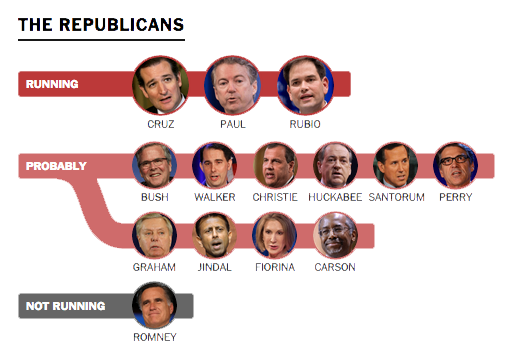
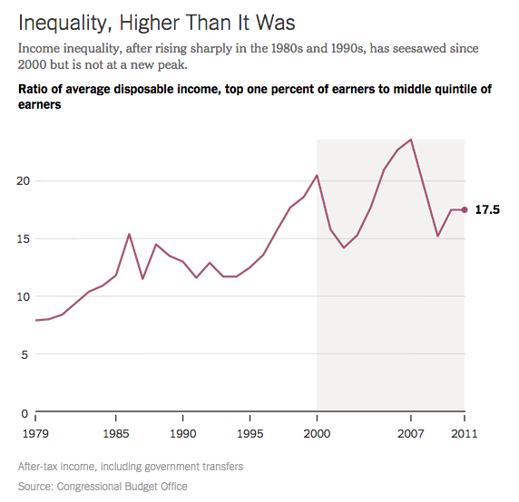
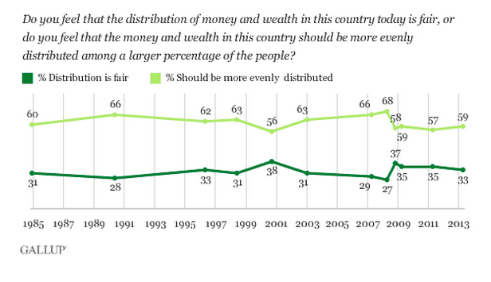
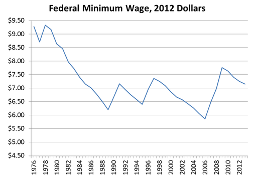

Appearing at a candidate forum in late January, three likely Republican presidential contenders — Senators Ted Cruz, Marco Rubio and Rand Paul — all made a striking confession: They considered “the increasing gap between rich and poor” to be a problem.
-

See the complete 2016 Presidential Election Tracker -

Senator Ted Cruz
Texas (R)
He has established a national following in less than two years in the Senate thanks to his confrontational approach toward the party establishment and high media profile. An agile debater, Mr. Cruz, 43, will have a robust network of small-dollar donors but will have to persuade his party's establishment wing that he can win the White House. Widely expected to enter the race, he has bulked up his political staff and made repeated visits to early primary states. Mr. Cruz's support would come from his party's hard-liners, including both Tea Party activists and Christian conservatives.
-

Senator Marco Rubio
Florida (R)
Mr. Rubio, 43, came to prominence propelled by Tea Party activists and since then has veered more toward party regulars. As such, he will position himself as the candidate who can bridge the party's conservative and establishment wings. But in doing so, he will have to convince donors and other party figures that he has the gravitas to be president while fending off attacks from the right over his key role in an immigration policy overhaul. Another wrinkle in Mr. Rubio's calculation: He is also up for re-election in 2016 and will have to eventually decide which office to seek.
-

Senator Rand Paul
Kentucky (R)
No Republican may have as sturdy a floor of support as Mr. Paul. But the central question regarding his candidacy is how big a coalition he can build beyond the libertarian-leaning supporters and army of small-dollar donors of his father, former Rep. Ron Paul, for his presidential bids. His challenge will be to convince traditional Republicans that he is mainstream enough to be the party's standard bearer. But Mr. Paul, 51, has another complication, one that he shares with Mr. Cruz and Mr. Rubio: Will Republicans nominate a junior senator in the wake of Mr. Obama's presidency?
-

But on the question of whether the government should intervene to solve it, Mr. Cruz and Mr. Paul rejected that approach, and Mr. Rubio appeared to agree with them.
When “government takes over the economy,” Mr. Cruz said, “it freezes everything in place. And it exacerbates income inequality.” He proposed lowering taxes and loosening regulations instead.
The responses, even as they reflect an effort to appeal to voters on an issue of increasing importance, put the three men at odds with public opinion. According to a Pew Research Center poll from January 2014, which surveyed about 1,500 adults, Americans not only consider inequality a problem, but 69 percent of them, and almost half of Republicans, say the government should act “to reduce the gap between the rich and everyone else.”

It’s not just right-wing presidential aspirants like Mr. Cruz and Mr. Paul whose statements on inequality diverge from public opinion. Hillary Rodham Clinton, though she has been more open to a government role in solving the problem, has yet to mention tax increases as a possible answer. By contrast, more than half of Americans and three-quarters of Democrats believe the “government should redistribute wealth by heavy taxes on the rich,” according to a Gallup poll of about 1,000 adults in April 2013.
-

Hillary Rodham Clinton
Possibly the strongest non-incumbent candidate to enter a primary in more than half a century, Mrs. Clinton, 67, is highly popular among Democrats and bears the promise of making history as the first woman to be president. Her calculation about whether to run will be made less on whether she thinks she can win the nomination and more by whether, after one failed White House run and decades in the political fray, she wants to once again enter public life. But politics and government have long been animating forces in the lives of Mrs. Clinton and former President Bill Clinton.
-

From Gallup: Majority in U.S. Want Wealth More Evenly Distributed
There is, however, one group of Americans with whom the Republican contenders and Mrs. Clinton, the likely Democratic front-runner, are generally in step: the wealthy.
In recent years, a small cohort of scholars has begun to study the policy views of the country's most affluent voters, and the results are especially illuminating on the subject of inequality. In a 2013 paper, Benjamin I. Page and Jason Seawright of Northwestern University and Larry M. Bartels of Vanderbilt University surveyed more than 80 wealthy Chicago-area residents and found that 62 percent felt “differences in income in America are too large” — a figure generally in line with public opinion.
But when it came to addressing inequality, the rich were much closer to Mr. Cruz than to the American public. Only 13 percent of wealthy interview subjects said the government should “reduce the differences in income between people with high incomes and those with low incomes.” Only 17 percent said the government should “redistribute wealth by heavy taxes on the rich.” Clearly, Warren Buffett’s belief that the tax code favors the wealthy over average workers makes him an outlier within his class.
-

Warren Buffet
Warren Edward Buffett (born August 30, 1930) is an American business magnate, investor and philanthropist. He was the most successful investor of the 20th century. Buffett is the chairman, CEO and largest shareholder of Berkshire Hathaway, and consistently ranked among the world's wealthiest people. He was ranked as the world's wealthiest person in 2008 and as the third wealthiest in 2011. In 2012 Time named Buffett one of the world's most influential people.
Source: Wikipedia -
“The average income [of the 400 highest earners in the U.S.] in 2009 was $202 million — which works out to a 'wage' of $97,000 per hour, based on a 40-hour workweek. (I'm assuming they're paid during lunch hours.) Yet more than a quarter of these ultrawealthy paid less than 15 percent of their take in combined federal income and payroll taxes. Half of this crew paid less than 20 percent. And — brace yourself — a few actually paid nothing.”
Read more:
A Minimum Tax for The Wealthy
Stop Coddling The Super-Rich
The views of the rich on other policies that might reduce inequality followed a similar pattern. A mere 19 percent of the wealthy, versus two-thirds of the general public, said the government should “see to it” that anyone who wants a job can find one. Forty percent of the wealthy, versus 78 percent of the public, said the government should make the minimum wage “high enough so that no family with a full-time worker falls below the official poverty line.”
More recently, one of Professor Page’s protégés, a Northwestern graduate student named Fiona Chin, has further investigated the subject, conducting interviews with nearly 100 other wealthy Americans across the country. Unlike Professors Page, Seawright and Bartels, whose interviewers typically spent under an hour soliciting their subjects’ views on a range of policy questions, Ms. Chin limited her discussions to inequality and often spoke with her subjects for several hours at a time.
Ms. Chin’s findings, which she is scheduled to present at a conference in April, are even more stark. As she puts it, the rich tend to see inequality “as a story about individual hard work, effort and character.”
They recognize that growing up poor puts workers at a disadvantage but argue that a middle-class background presents no barrier to economic success and that growing up wealthy can even be a liability because it robs people of their incentive to work hard. In general, Ms. Chin has found, the rich regard those who do not succeed in life as “people who didn’t take advantage of the education system,” not victims of circumstances beyond their control.
Some of Ms. Chin’s subjects noted that their views had changed only after they amassed their riches. “Before I had much money, I thought there should be 100 percent estate tax on dynastic wealth,” a 33-year-old Silicon Valley engineer told Ms. Chin, who grants her subjects anonymity. “Once you’re playing the game, it’s game on.”
-
Estate Tax
The Estate Tax is a tax on your right to transfer property at your death. It consists of an accounting of everything you own or have certain interests in at the date of death. Most relatively simple estates (cash, publicly traded securities, small amounts of other easily valued assets, and no special deductions or elections, or jointly held property) do not require the filing of an estate tax return. A filing is required for estates with combined gross assets and prior taxable gifts exceeding $5,430,000 in 2015.
Source: Internal Revenue Service
Comments like this hint at one of the most intriguing conclusions of the recent avenue of research: Wealth seems to shape people’s views regardless of their age, gender, education, marital status — or even ideology and political party. “There is a sense in which wealth seems to trump partisanship,” Professor Page said in an email.
And given the attention candidates of all stripes must lavish on wealthy donors, that might explain why even relatively moderate presidential aspirants are reluctant to propose a prominent role for government in reducing inequality.
-
“With the advent of Citizens United, any players with the wherewithal, and there are surprisingly many of them, can start what are in essence their own political parties, built around pet causes or industries and backing politicians uniquely answerable to them. No longer do they have to buy into the system. Instead, they buy their own pieces of it outright, to use as they see fit. 'Suddenly, we privatized politics,' says Trevor Potter, an election lawyer who helped draft the McCain-Feingold law.”
How Billionaire Oligarchs are Becoming Their Own Political Parties
Jeb Bush, arguably the most outspoken potential Republican candidate on the subject, has struck much the same posture as his more conservative rivals. “We believe the income gap is real, but that only conservative principles can solve it by removing the barriers to upward mobility,” Mr. Bush wrote when announcing the formation of a political action committee this year. Mr. Bush vowed to “celebrate success and risk-taking, protect liberty, cherish free enterprise.”
-

Jeb Bush
Mr. Bush is the closest thing the Republicans have to a Hillary Clinton, but there are doubts among Republicans that he will actually run. He said his decision would rest largely on its impact on his family, but Mr. Bush, 61, who has not been on a ballot since 2002, also may not want to enter a primary campaign that he could lose. His support for an immigration overhaul and Common Core education standards are at odds with the party's more conservative wing. But the question of whether Republicans want to nominate a third Bush for the presidency also looms.
-
“At the Right to Rise PAC, we will support candidates who want to restore the promise of America with a positive, conservative vision of reform and renewal. We believe the income gap is real, but that only conservative principles can solve it by removing the barriers to upward mobility. We will celebrate success and risk-taking, protect liberty, cherish free enterprise, strengthen our national defense, embrace the energy revolution, fix our broken and obsolete immigration system, and give all children a better future by transforming our education system through choice, high standards and accountability. We will strive to put our fiscal house back in order, re-limit government and ensure that America is a welcoming society.”
Source: Right to Rise PAC
Mr. Rubio is the Republican who has come closest to suggesting an affirmative role for government, proposing that Washington redirect money from programs like food stamps to subsidies for low-wage workers, though he would not increase the total funds available for alleviating poverty. A spokesman said by email that Mr. Rubio “doesn’t think the federal government is very good” at reducing poverty and would like to see those programs reformed. He has indicated that he would cut taxes for the rich rather than raise them.
-
Food Stamps
The Supplemental Nutrition Assistance Program (SNAP), formerly known as the Food Stamp program, provides food-purchasing assistance for low- and no-income people living in the U.S. It is a federal aid program, administered by the U.S. Department of Agriculture, under the Food and Nutrition Service (FNS), though benefits are distributed by each U.S. state's Division of Social Services or Children and Family Services.
SNAP benefits cost $74.1 billion in fiscal year 2014 and supplied roughly 46.5 million Americans with an average of $125.35 for each person per month in food assistance. It is the largest nutrition program of the fifteen administered by FNS and is a critical component of the federal social safety net for low-income Americans.
Source: Wikipedia
-
“Senator Marco Rubio and Senator Mike Lee have come out with a plan that seeks to resolve this debate by giving both sides what they want: Big new tax cuts for families, like a tax credit of $2,500 per child, as well as big tax cuts for owners of capital, including a tax rate of zero on dividends and capital gains. 'It’s sort of the Oprah Winfrey theory of tax cuts,' says James Pethokoukis, an economic policy scholar at the right-of-center American Enterprise Institute. "She was like 'You get a car, you get a car'. Well this is 'You get a tax cut, you get a tax cut.' ”
And then there is Mrs. Clinton, who has also largely avoided saying anything that might offend her wealthy supporters.
At a policy speech in Washington in May, Mrs. Clinton acknowledged that “the share of income and wealth going to those at the very top — not just the top 1 percent, but the top 0.1 percent or the 0.01 percent of the population — has risen sharply over the last generation.” She warned that “extreme inequality has corrupted other societies.”
-
“So what do we draw from this? Americans are working harder, contributing more than ever to their companies’ bottom lines and to our country’s total economic output, and yet many are still barely getting by, barely holding on, not seeing the rewards that they believe their hard work should have merited. And where’s it all going? Well, economists have documented how the share of income and wealth going to those at the very top — not just the top 1 percent, but the top .1 percent or the .01 percent of the population — has risen sharply over the last generation. Some are calling it a throwback to the Gilded Age of the Robber Barons. ”
Hillary Clinton's Keynote at the 2014 New America Conference
But Mrs. Clinton was vague when it came to solutions. She promoted the public-private partnerships that the Clinton Foundation was brokering to expand worker training and noted that her husband’s administration had ushered in “broad-based growth and shared prosperity” through increasing the minimum wage and doubling the earned-income tax credit.
-
“So we need to do more to sync up young people, workforce training programs, and employers looking to hire. And so as part of the Clinton Foundation effort, we’re reaching out to businesses big and small and really trying to drill down on what their actual needs are, and why what they tried before hasn’t worked, and how we can do a better job in a public-private partnership to resolve these difficulties. And there are great success stories out there that we can learn more from: apprenticeships, partnerships with community colleges, innovative cross-sector collaborations. There are forward-looking companies that recognize that molding the talent pool of the future is good for them — that’s an investment worth making. ”
Hillary Clinton's Keynote at the 2014 New America Conference
-

See the complete The Minimum Wage Ain't What It Used To Be -
Earned Income Tax Credit
The United States federal earned income tax credit or earned income credit (EITC or EIC) is a refundable tax credit for low to moderate income working individuals and couples—particularly those with children. The amount of EITC benefit depends on a recipient’s income and number of children.
Source: Wikipedia
Though she derided the Republican practice of cutting taxes on the wealthy, she made no mention of tax increases or more aggressive measures, like capping the pay of chief executives or modestly taxing stock market transactions.
Mrs. Clinton sounded similar notes when discussing inequality at the Aspen Institute in June, during an interview at a conference in February and during a forum last week at the Center for American Progress, a liberal think tank. Before the well-heeled crowd at Aspen, she said, “We have to have a concerted effort to meet a consensus about how to deal with this.” She alluded only elliptically to “hard choices” that her husband’s administration had made, saying that “they’ve become harder than they were even 15, 18 years ago.”
-
-
-
“Clinton, at a discussion about urban areas, cited the benefits of partnerships between the private and public sectors and updated policies to improve social mobility. The policy event offered a preview of economic themes she is likely to address in a campaign.
"We need to think hard about what we're going to do now that people are moving back into and staying in cities to make sure that our cities are not just places of economic prosperity and job creation on average," Clinton said. "But do it in a way that lifts everybody up to deal with the overriding issues of inequality and lack of mobility.”
Asked whether those hard choices she referred to were tax increases, a Clinton spokesman said he was not sure.
None of this surprises Professor Page. “It seems clear that wealthy Americans play a big part in shaping policy discussions and policy itself, from taxes to regulation to social welfare policies,” he said. “Definitely, they affect what candidates can say.”